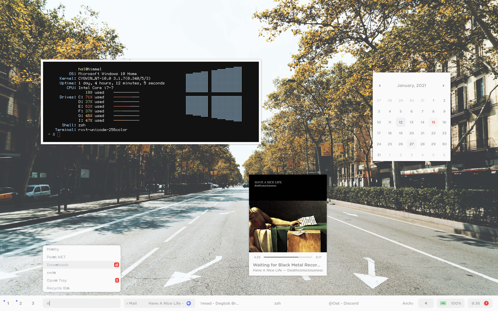

When you think of a rice, you probably think of *nix-like riced system, and that ricing on windows isn't possible / is really limited, and that is true to some extent, but we, as a community have come to prove that at least some customization is possible on windows.
 rice by hal#4779 rice by eryk#0700Our main community is located at Discord
All of our projects are located at our GitHub organization
So if you want to start your journey in windows ricing, why not join winthemers and get insipiration / share your own rice or do anything else related to ricing!